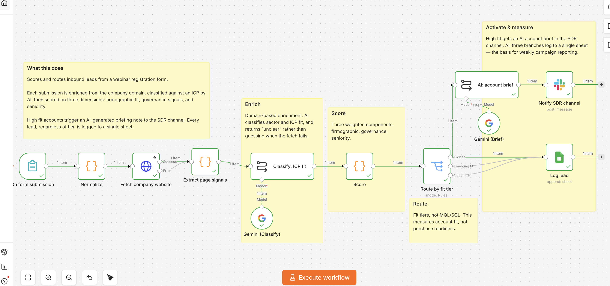

A self-hosted n8n workflow that enriches inbound leads, classifies them against your ICP using an LLM, calculates a weighted score, and automatically routes them to your CRM with a sales notification.
Leave your email: you'll receive the n8n export file ready to import, plus configuration instructions.
Incoming leads are enriched with firmographic and contextual data before evaluation.
A language model evaluates the lead against your ideal customer profile and assigns a reasoned classification, not just a fixed-rule score.
A weighted score is calculated, the lead is routed to the right CRM, and the sales team is automatically notified on priority leads.

The actual n8n workflow — enrichment, AI classification, scoring, and fit-based routing.